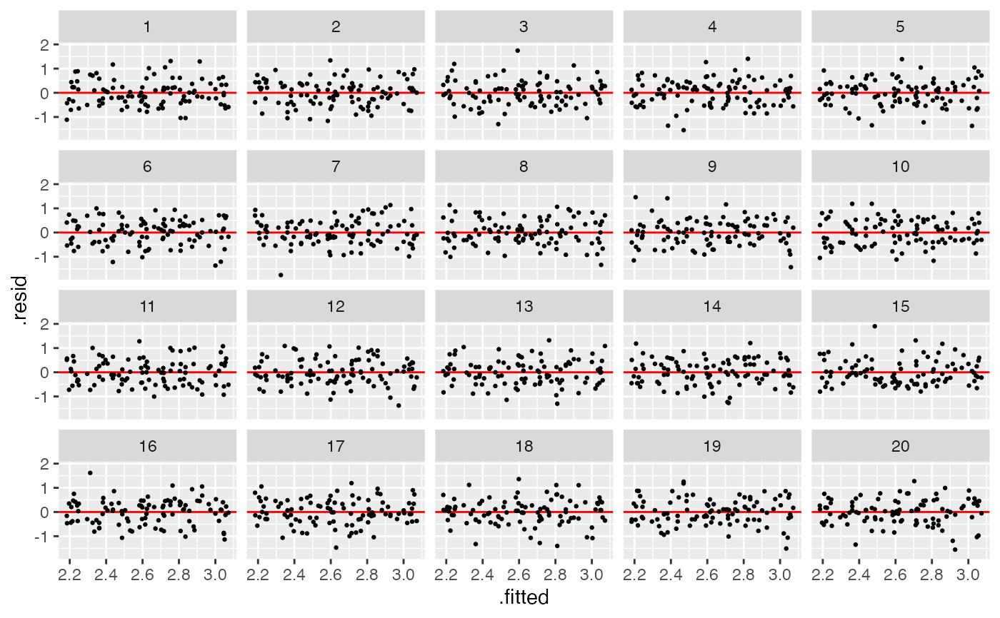
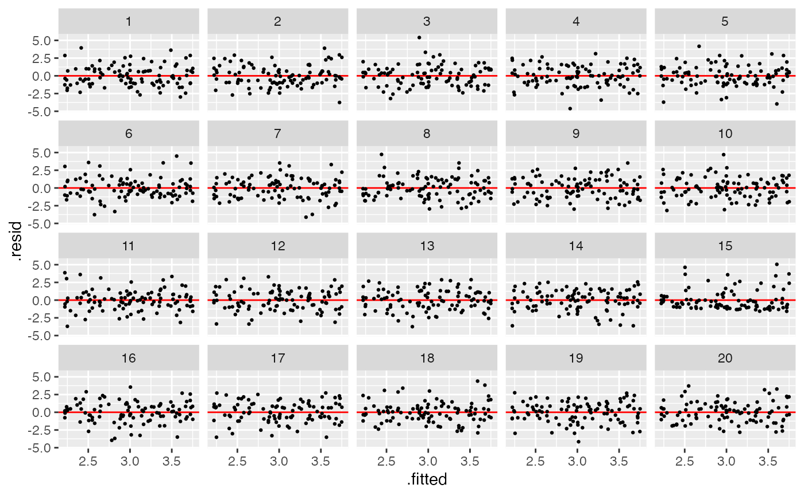
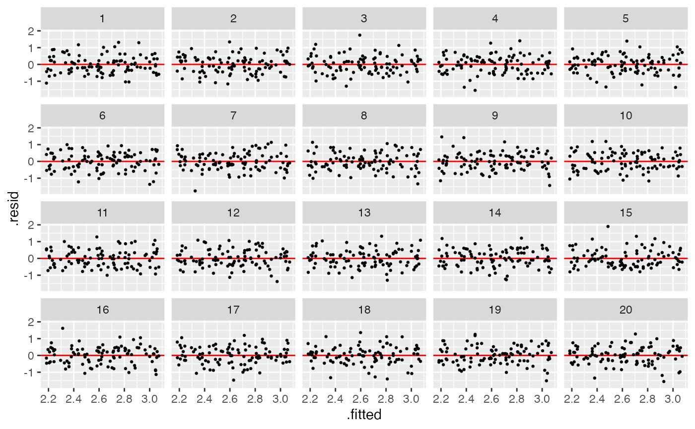
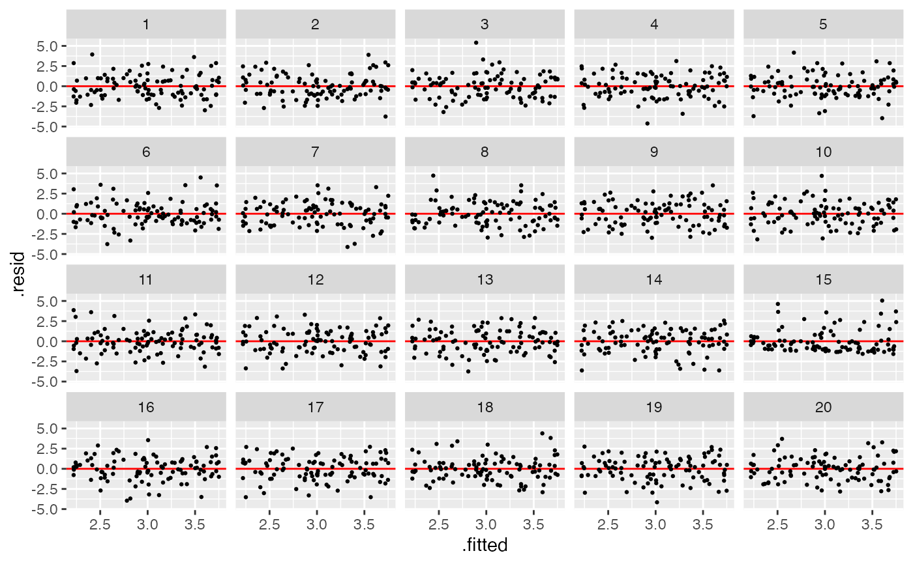

This function will be called after an instance is built. User
input will be stored in the environment. The response variable of this model
is y. The formula of y is defined in NON_NORMAL_MODEL$formula, the null
formula is defined in NON_NORMAL_MODEL$null_formula, the alternative is
defined in NON_NORMAL_MODEL$alt_formula.
Arguments
- x
Random variable or closed form expression. Default is
x = rand_uniform(-1, 1, env = new.env(parent = parent.env(self))).- e
Random variable or closed form expression. Default is
e = rand_lognormal(0, sigma, env = new.env(parent = parent.env(self))).
Examples
# Instantiate
x <- rand_uniform()
e <- rand_lognormal(sigma = 0.5)
test <- non_normal_model(x = x, e = e)
test
#>
#> ── <NON_NORMAL_MODEL object>
#> y = 1 + x + e
#> - x: <RAND_UNIFORM object>
#> [a: 0, b: 1]
#> - e: <RAND_LOGNORMAL object>
#> [mu: 0, sigma: 0.5]
# Generate data
test$gen(10)
#> y x e .resid .fitted
#> 1 2.928855 0.95260892 0.9762458 -0.13324492 3.062100
#> 2 2.909340 0.89822635 1.0111137 -0.07703486 2.986375
#> 3 1.793973 0.07010865 0.7238644 -0.03929324 1.833266
#> 4 3.353190 0.73364835 1.6195417 0.59598096 2.757209
#> 5 1.941897 0.45956849 0.4823285 -0.43367083 2.375568
#> 6 3.104775 0.50557284 1.5992025 0.66514898 2.439626
#> 7 2.491262 0.83331957 0.6579420 -0.40473414 2.895996
#> 8 1.810016 0.27780858 0.5322077 -0.31246080 2.122477
#> 9 2.615035 0.59019236 1.0248425 0.05758039 2.557454
#> 10 2.068730 0.18051537 0.8882147 0.08172845 1.987002
# Generate lineup
test$gen_lineup(10, k = 3)
#> y x e .resid .fitted test_name statistic
#> 1 2.896413 0.2973732 1.5990397 0.094755745 2.801657 Shapiro-test 0.7300485
#> 2 3.906180 0.2447297 2.6614500 1.147944881 2.758235 Shapiro-test 0.7300485
#> 3 2.384634 0.2793961 1.1052380 -0.402194932 2.786829 Shapiro-test 0.7300485
#> 4 2.585653 0.3577107 1.2279421 -0.265773070 2.851426 Shapiro-test 0.7300485
#> 5 4.481142 0.9572582 2.5238840 1.135186433 3.345956 Shapiro-test 0.7300485
#> 6 2.733534 0.8430906 0.8904439 -0.518251490 3.251786 Shapiro-test 0.7300485
#> 7 3.059188 0.7369987 1.3221897 -0.105088820 3.164277 Shapiro-test 0.7300485
#> 8 2.327702 0.2278376 1.0998642 -0.416599761 2.744302 Shapiro-test 0.7300485
#> 9 2.946052 0.8837575 1.0622947 -0.339277394 3.285330 Shapiro-test 0.7300485
#> 10 2.922053 0.8442650 1.0777880 -0.330701590 3.252755 Shapiro-test 0.7300485
#> 11 2.615967 0.2973732 1.5990397 -0.185690647 2.801657 Shapiro-test 0.9193375
#> 12 2.607953 0.2447297 2.6614500 -0.150281672 2.758235 Shapiro-test 0.9193375
#> 13 3.337203 0.2793961 1.1052380 0.550373717 2.786829 Shapiro-test 0.9193375
#> 14 3.108612 0.3577107 1.2279421 0.257185952 2.851426 Shapiro-test 0.9193375
#> 15 3.036235 0.9572582 2.5238840 -0.309720797 3.345956 Shapiro-test 0.9193375
#> 16 2.313759 0.8430906 0.8904439 -0.938027029 3.251786 Shapiro-test 0.9193375
#> 17 2.937964 0.7369987 1.3221897 -0.226313084 3.164277 Shapiro-test 0.9193375
#> 18 2.334369 0.2278376 1.0998642 -0.409932540 2.744302 Shapiro-test 0.9193375
#> 19 3.318181 0.8837575 1.0622947 0.032851049 3.285330 Shapiro-test 0.9193375
#> 20 4.632310 0.8442650 1.0777880 1.379555051 3.252755 Shapiro-test 0.9193375
#> 21 2.799340 0.2973732 1.5990397 -0.002317287 2.801657 Shapiro-test 0.9456738
#> 22 3.047266 0.2447297 2.6614500 0.289030769 2.758235 Shapiro-test 0.9456738
#> 23 3.278386 0.2793961 1.1052380 0.491557320 2.786829 Shapiro-test 0.9456738
#> 24 2.464283 0.3577107 1.2279421 -0.387143202 2.851426 Shapiro-test 0.9456738
#> 25 3.667661 0.9572582 2.5238840 0.321705195 3.345956 Shapiro-test 0.9456738
#> 26 4.065600 0.8430906 0.8904439 0.813814111 3.251786 Shapiro-test 0.9456738
#> 27 2.654685 0.7369987 1.3221897 -0.509592294 3.164277 Shapiro-test 0.9456738
#> 28 2.386642 0.2278376 1.0998642 -0.357659496 2.744302 Shapiro-test 0.9456738
#> 29 2.039223 0.8837575 1.0622947 -1.246106559 3.285330 Shapiro-test 0.9456738
#> 30 3.839466 0.8442650 1.0777880 0.586711443 3.252755 Shapiro-test 0.9456738
#> p_value k null
#> 1 0.002040348 2 FALSE
#> 2 0.002040348 2 FALSE
#> 3 0.002040348 2 FALSE
#> 4 0.002040348 2 FALSE
#> 5 0.002040348 2 FALSE
#> 6 0.002040348 2 FALSE
#> 7 0.002040348 2 FALSE
#> 8 0.002040348 2 FALSE
#> 9 0.002040348 2 FALSE
#> 10 0.002040348 2 FALSE
#> 11 0.351462501 1 TRUE
#> 12 0.351462501 1 TRUE
#> 13 0.351462501 1 TRUE
#> 14 0.351462501 1 TRUE
#> 15 0.351462501 1 TRUE
#> 16 0.351462501 1 TRUE
#> 17 0.351462501 1 TRUE
#> 18 0.351462501 1 TRUE
#> 19 0.351462501 1 TRUE
#> 20 0.351462501 1 TRUE
#> 21 0.617683994 3 TRUE
#> 22 0.617683994 3 TRUE
#> 23 0.617683994 3 TRUE
#> 24 0.617683994 3 TRUE
#> 25 0.617683994 3 TRUE
#> 26 0.617683994 3 TRUE
#> 27 0.617683994 3 TRUE
#> 28 0.617683994 3 TRUE
#> 29 0.617683994 3 TRUE
#> 30 0.617683994 3 TRUE
# Plot the lineup
test$plot_lineup(test$gen_lineup(100))
 test <- non_normal_model(x = x, e = rand_lognormal(sigma = 0.1))
test$plot_lineup(test$gen_lineup(100))
test <- non_normal_model(x = x, e = rand_lognormal(sigma = 0.1))
test$plot_lineup(test$gen_lineup(100))
 test <- non_normal_model(x = x, e = rand_lognormal(sigma = 0.5))
test$plot_lineup(test$gen_lineup(100))

test <- non_normal_model(x = x, e = rand_lognormal(sigma = 1))
test$plot_lineup(test$gen_lineup(100))

test <- non_normal_model(x = x, e = rand_lognormal(sigma = 2))
test$plot_lineup(test$gen_lineup(100))
test <- non_normal_model(x = x, e = rand_lognormal(sigma = 0.5))
test$plot_lineup(test$gen_lineup(100))

test <- non_normal_model(x = x, e = rand_lognormal(sigma = 1))
test$plot_lineup(test$gen_lineup(100))

test <- non_normal_model(x = x, e = rand_lognormal(sigma = 2))
test$plot_lineup(test$gen_lineup(100))